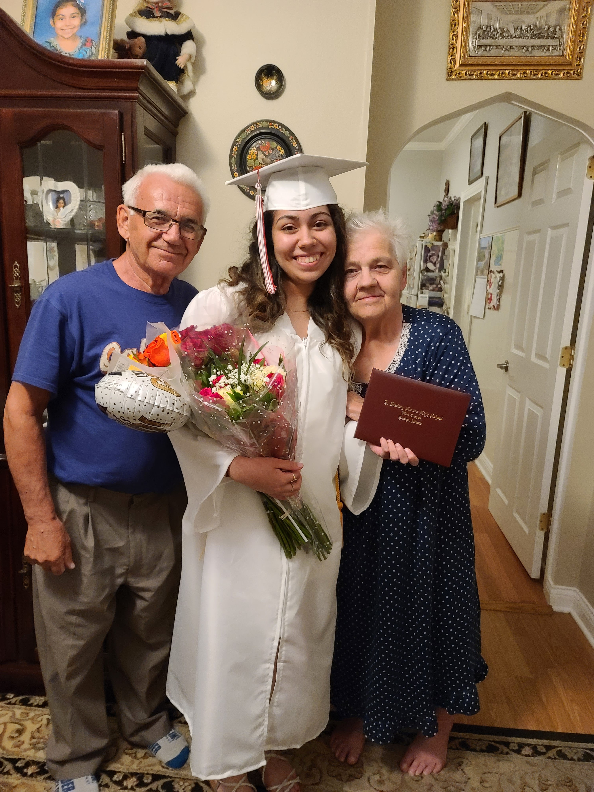
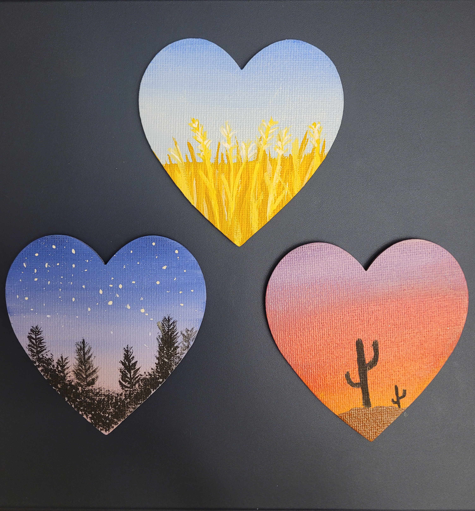
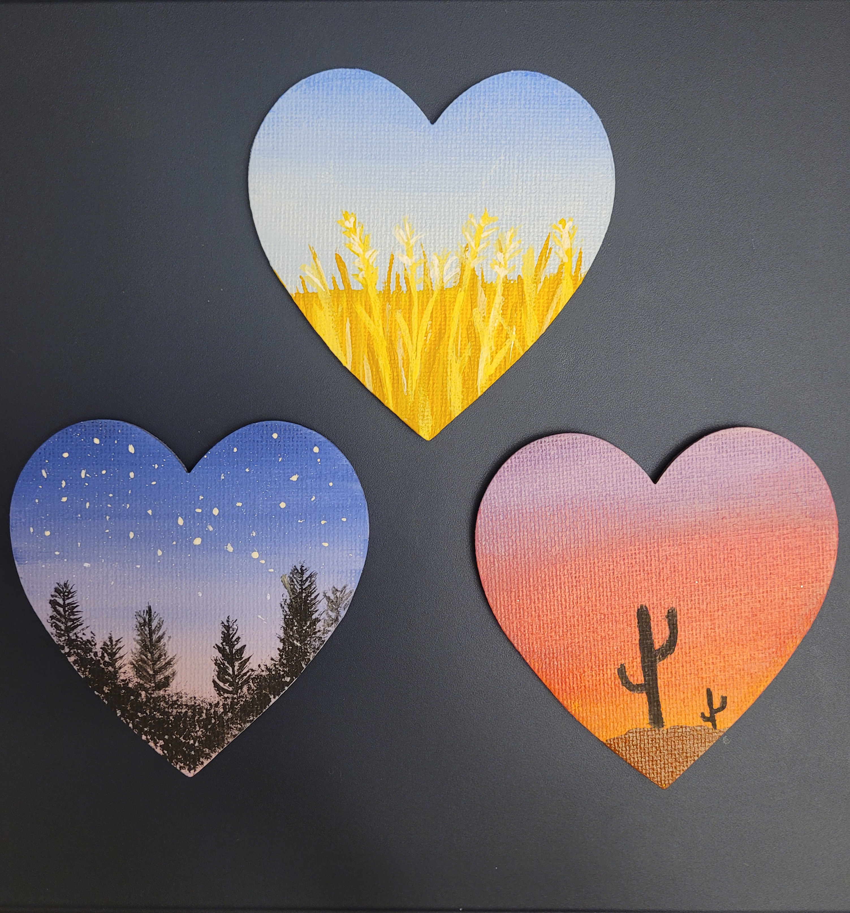

Hobbies
One of my favorite hobbies that you could find me doing is embroidery. Embroidery is one way for me to relax and relieve stress. I also love nature; on weekends I’ll go with my mom on trails to go biking or walking. When we do go biking, I usually end up waiting for my mom because I always reach the end of the trail before her. Another hobby of mine would be painting, I usually like to paint scenic scenes. When you walk into my home you could tell I have multiple cactuses. Even right now I have six plants in my dorm room. So, you can say I am a big plant person. Hook latch art is a hobby most people have never really heard of, but I love doing it. You basically get a big grid and must match up the colors that they provide. I usually like making pillowcases. Another interest of mine would be baking, when I come home for the holidays, I always end up baking some type of dessert, whether it’s Ukrainian or American I make it.
 



Violin
When I was young my uncle used to play the violin. I was always fascinated by his playing, and he inspired me to start playing. I started playing the violin when I was in first grade. It was not only until three years later I auditioned to play in the Chicago Youth Symphony Orchestra, and I made it in. In eighth grade I suffered an injury that took me out on medical leave for a year. I went to multiple doctors and in the end no diagnosis was ever made. I was told that I wouldn’t be able to play violin ever again, but I didn’t let that set me back. I took several months of occupational therapy, and I was able to play violin again. I was taken off medical leave and have grown in my technique since then. My first time back after medical leave I was accepted into the Illinois All-District Orchestra. I have been awarded as an Illinois All-District Musician for three years in a row now. I have overcome my injury and showed the doctors that I could once again play the violin. I continued to do what I love most, playing the violin again.

In the Future
I decided to come to Pittsburgh to pursue my dream of becoming a Physician Assistant. I plan on receiving my degree in biological sciences and receiving a minor in music. Once I finish my four years at Pitt, I plan on applying to PA school. My goal is to attend the PA school that is in Pittsburgh, if not then I will have to look at other options. I want to receive the minor in music because I want to be able to teach my own children about music one day.